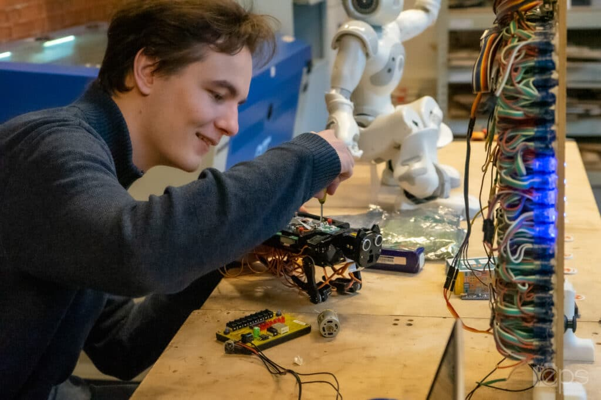

🧪
Travaux pratiques
Les TP permettent de tester les notions vues en cours, de manipuler les outils et de comprendre les erreurs en les corrigeant directement.
Vie étudiante
La vie étudiante à l’Efrei ne se limite pas aux cours. Elle repose aussi sur les projets, les événements, les associations, les travaux pratiques et les échanges entre étudiants.


Travail collectif
Dans les formations informatiques, les projets permettent de passer de la théorie à une réalisation concrète. Les étudiants doivent comprendre un sujet, organiser leur travail, répartir les tâches et produire un résultat fonctionnel.
Ce type de travail aide aussi à développer des compétences utiles dans le monde professionnel : autonomie, communication, gestion du temps, résolution de problèmes et capacité à améliorer progressivement un projet.
Apprentissage pratique
L’informatique s’apprend en manipulant. Les cours donnent les bases, mais les TP et les projets permettent de mieux comprendre les notions en les appliquant directement.
Les TP permettent de tester les notions vues en cours, de manipuler les outils et de comprendre les erreurs en les corrigeant directement.
Les projets demandent de s’organiser collectivement, de se répartir les tâches et de produire un résultat commun, comme dans un contexte professionnel.
Les étudiants peuvent améliorer leurs projets avec des idées personnelles : design, animations, fonctionnalités interactives ou meilleure organisation du contenu.
Un projet informatique demande de bien ranger ses fichiers, de nommer clairement les ressources et de vérifier que les liens entre les pages fonctionnent.
Le campus est un lieu d’apprentissage, de travail et de circulation. Il permet aux étudiants de suivre les cours, travailler entre eux et avancer sur leurs projets.
Les projets étudiants permettent d’appliquer les connaissances techniques et de construire progressivement une méthode de travail plus autonome.

Le travail sur ordinateur est central : programmation, tests, correction, organisation des fichiers et amélioration de l’interface.
Vie associative
La vie étudiante repose aussi sur les associations, les événements et les temps collectifs. Ces activités permettent de rencontrer d’autres étudiants, de participer à des projets différents et de développer des compétences qui ne sont pas seulement techniques.
Les associations peuvent concerner plusieurs domaines : sport, culture, loisirs, projets étudiants ou actions collectives. Elles contribuent à créer une ambiance de campus plus dynamique.
Exemples de projets
Les projets peuvent prendre plusieurs formes selon les matières : site web, interface dynamique, réflexion cybersécurité, données structurées ou outil interactif.
Création d’un site en HTML, CSS et JavaScript avec navigation, pages reliées entre elles et adaptation aux petits écrans.
Comprendre les risques possibles autour d’un système ou d’un site, puis réfléchir aux bonnes pratiques de sécurité.
Utiliser des données organisées, par exemple dans un fichier JSON, pour représenter des informations liées au site.
Ajouter des interactions JavaScript pour rendre une page plus vivante : menu mobile, filtres, FAQ ou validation de formulaire.